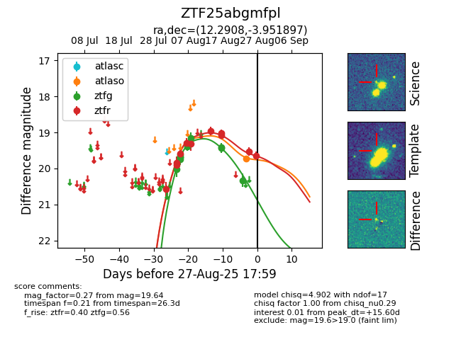

Target ZTF25abgmfpl at 2025-08-26 11:35, see:
FINK: fink-portal.org/ZTF25abgmfpl
Lasair: lasair-ztf.lsst.ac.uk/objects/ZTF25abgmfpl
ALeRCE: alerce.online/object/ZTF25abgmfpl
alt names
ZTF25abgmfpl (ztf,fink)
coordinates:
equatorial (ra, dec) = (12.2908,-3.95190)
galactic (l, b) = (121.4906,-66.81728)
photometry
last atlaso=19.72, ztfg=20.33, ztfr=19.53
1 atlaso, 10 ztfg, 10 ztfr detections
